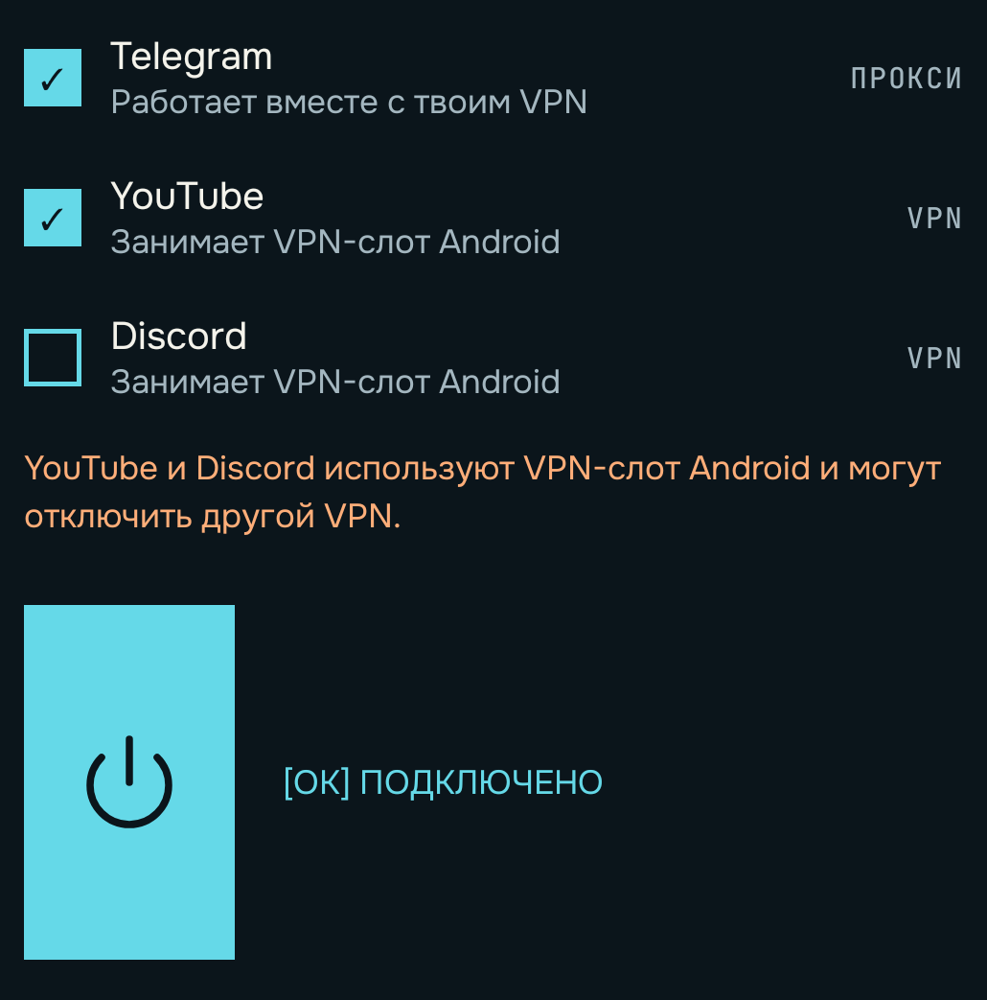

ByeBye TGWS Proxy
Совместная работа
Оба модуля
включены
На снимке TG-WS обслуживает Telegram, а ByeByeDPI в режиме VPN — YouTube. Discord не выбран.

Совместная работа
На снимке TG-WS обслуживает Telegram, а ByeByeDPI в режиме VPN — YouTube. Discord не выбран.
